Inverse Design of Photonic Structures Using Differentiable Physics
A deep dive into modern gradient-based optimization
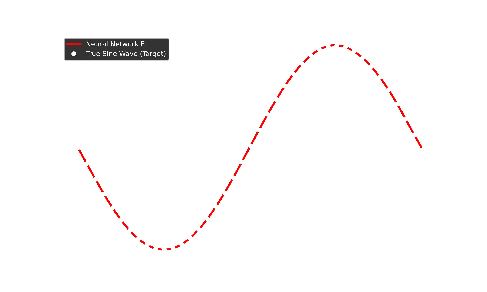
Giovanni Pellegrini
giovanni.pellegrini@unipv.it
Me in a nutshell!
Giovanni Pellegrini
- Associate Professor - Physics Department - University of Pavia
Research interests
- Computational Nanophotonics
- Machine Learning and Optimization for Nanophotonics
- Machine Learning for Image Reconstruction
- Machine Learning for Signal Processing
Also interested in
- Industrial Automation and Robotics
- Deep Learning for Machine Vision
(SOFT) PREREQUISITES
-
(A little bit of) Programming

-
(Heard about) Neural Nets
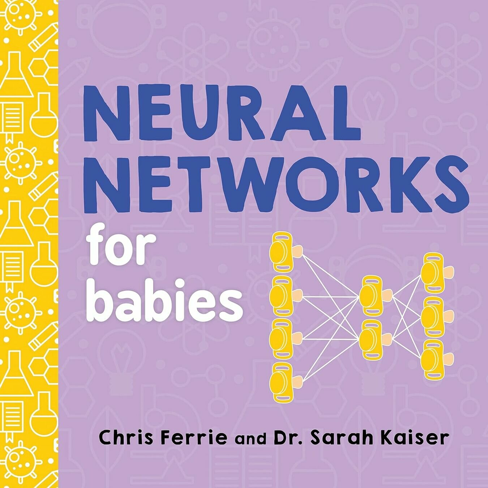
- (Basics of) Optics and photonics
Why Python?
The Good, The Bad, and The Environments
The Good: Syntax & Ecosystem
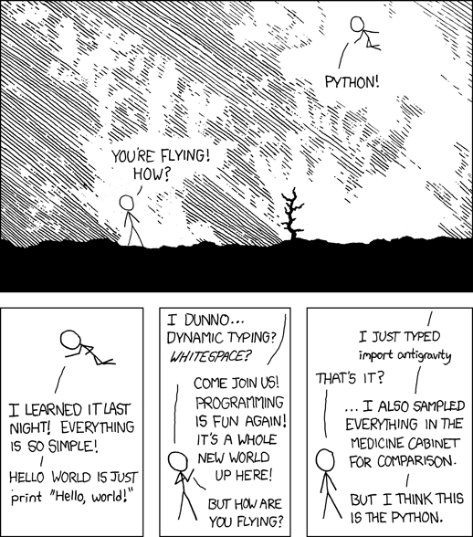
The Bad: Environments
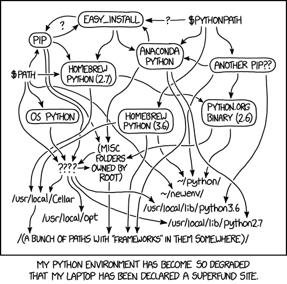
The Advent of Neural Network Frameworks
Machine Learning has driven the development of highly optimized tensor libraries over the last decade.
Key Players
-
 TensorFlow: The early pioneer of static computation graphs. Great for
production, historically harder to debug.
TensorFlow: The early pioneer of static computation graphs. Great for
production, historically harder to debug.
-
 JAX: High-performance, functional array computing (Autograd + XLA).
Excellent for pure functional math.
JAX: High-performance, functional array computing (Autograd + XLA).
Excellent for pure functional math.
- PyTorch: Pythonic, dynamic computation graphs. The undisputed leader in research.
They all share one superpower:
Automatic Differentiation
Focus on PyTorch
Why choose PyTorch for scientific computing?
The PyTorch Advantage
- Dynamic Computation Graphs: "Define-by-run". The graph is built on the fly as operations occur.
- Pythonic Nature: Feels exactly like writing standard NumPy code.
- Seamless GPU Acceleration: Move tensors from CPU to GPU with a simple
.to('cuda'). - Massive Ecosystem: HuggingFace, PyTorch Lightning, and growing SciML libraries.
Showing the Ropes of PyTorch
Tensors and Operations
Devices & Hardware Acceleration
PyTorch can seamlessly run computations on different hardware backends.
import torch
# Standard check for hardware acceleration
if torch.cuda.is_available():
device = torch.device('cuda') # NVIDIA GPU
elif torch.backends.mps.is_available():
device = torch.device('mps') # Apple Silicon
else:
device = torch.device('cpu') # Fallback
print(f"Using device: {device}")
This allows code to run efficiently on Colab GPUs, Macbooks, or standard laptops without changes.
Tensors
Tensors are multi-dimensional arrays, similar to NumPy's ndarray.
import torch
# Create a tensor on the selected device
x = torch.tensor([1.0, 2.0, 3.0], device=device)
# Element-wise operations
y = torch.sin(x) + torch.exp(x)
The Computational Graph
When you set requires_grad=True, PyTorch tracks every mathematical operation
applied to the tensor, building a Directed Acyclic Graph (DAG).
Automatic Differentiation (Autograd)
# Track gradients
x = torch.tensor(2.0, requires_grad=True) # or
x = torch.nn.Parameter(torch.tensor(2.0))
# Forward pass builds the graph
y = x**2 + 5*x
# Backward pass traverses the DAG backwards
y.backward()
# Evaluates 2*x + 5 at x=2 -> 9.0
print(x.grad)
Deep Dive: Neural Networks
The torch.nn Module
What is a Linear Layer?
A linear layer (fully connected) applies an affine transformation:
\[ y = W x + b \]- $x$: Input vector
- $W$: Weight matrix (learnable)
- $b$: Bias vector (learnable)
- $y$: Output vector
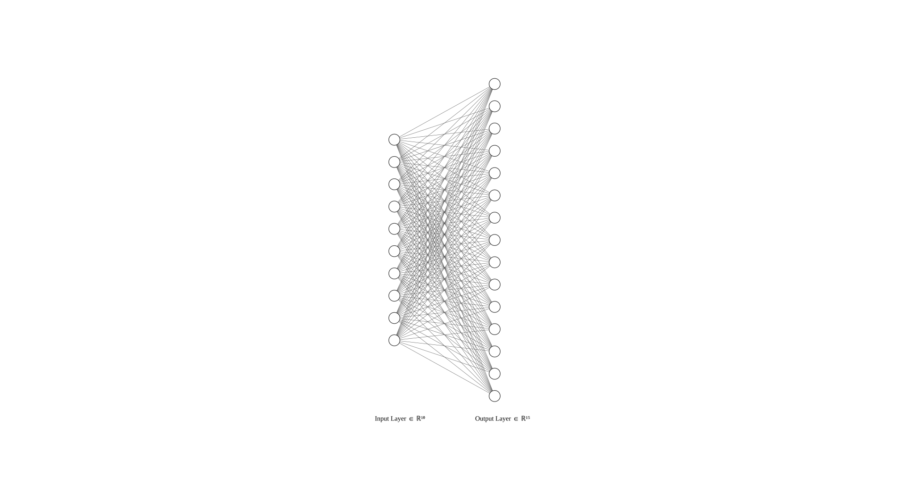
In PyTorch
# Maps a 10-dimensional input to a 50-dimensional output
layer = nn.Linear(in_features=10, out_features=50)
# Accessing the internal parameters
print(layer.weight.shape) # torch.Size([50, 10])
print(layer.bias.shape) # torch.Size([50])
These weights and biases automatically have requires_grad=True.
Activation Functions
Breaking the Linearity
Without activations, stacking multiple linear layers is mathematically equivalent to a single linear layer.
Visualizing Activations
ReLU
Sigmoid
Tanh
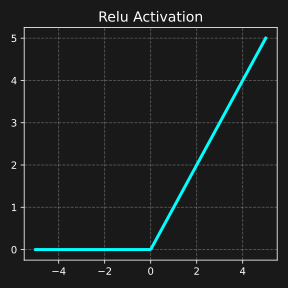
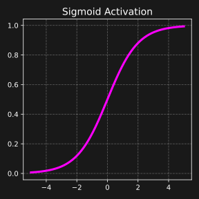
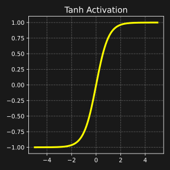
Loss Functions: output vs target
How we measure "how wrong" the model or physical design is, with respect to a target.
\[\mathcal{Loss}(output,target)\]
# Mean Squared Error for continuous fitting
criterion = nn.MSELoss()
output = model(input)
loss = criterion(output, target)
The loss is a scalar tensor. Calling loss.backward() computes
gradients for every parameter that contributed to it.
Loss Functions: just the output
In this case the output represents the physical quantity that we want to optimize.
\[\mathcal{output=f(input)}\]
# Mean Squared Error for continuous fitting
output = differentiable_simulation(input)
Output is still a scalar tensor. Calling output.backward() computes
gradients for every parameter that contributed to it.
Optimizers
Updating parameters intelligently
Stochastic Gradient Descent (SGD)
Where $\eta$ is the learning rate. Simple, but can get stuck in local minima and navigate flat regions slowly.
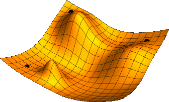
Adam (Adaptive Moment Estimation)
Maintains estimates of 1st moment ($m_t$) and 2nd raw moment ($v_t$) of the gradients.
1. Update biased moment estimates:
2. Compute bias-corrected estimates (crucial for early steps):
3. Update parameters:
Building the MLP
Defining a Neural Network with nn.Sequential
# Multi-Layer Perceptron (MLP) for 1D regression
model = nn.Sequential(
nn.Linear(1, 64),
nn.Tanh(),
nn.Linear(64, 64),
nn.Tanh(),
nn.Linear(64, 1)
)
This defines a network with 1 input, 2 hidden layers of 64 neurons, and 1 output.
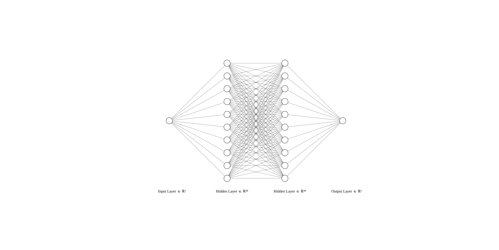
Building the MLP, again...
Defining a Neural Network subclassing nn.Module
# Define a neural network with subclassing
class NeuralNetwork(nn.Module):
def __init__(self, input_dim=1, hidden_dim=64, output_dim=1):
super().__init__()
self.net = nn.Sequential(
nn.Linear(input_dim, hidden_dim),
nn.Tanh(),
nn.Linear(hidden_dim, hidden_dim),
nn.Tanh(),
nn.Linear(hidden_dim, output_dim),
)
def forward(self, x):
out = self.net(x)
return out
It's the same network, just defined with a different style.
Putting it all Together
Fitting a Sine Wave
Goal: Train our MLP to map an input $x$ to $y = \sin(x)$
# 1. Data Generation
n_points = 200
# Create points between -pi and pi
x_train = torch.linspace(-np.pi, np.pi, n_points).view(-1, 1)
# The target we want to approximate
y_train = torch.sin(x_train)
Problem Setup
# 2. Model Definition
model = nn.Sequential(
nn.Linear(1, 64), nn.Tanh(),
nn.Linear(64, 64), nn.Tanh(),
nn.Linear(64, 1)
)
# 3. Optimizer and Loss
# Adam optimizer adjusting the model's parameters
optimizer = optim.Adam(model.parameters(), lr=0.01)
# Mean Squared Error to measure fit quality
criterion = nn.MSELoss()
The optimization loop
# 4. Training Loop
epochs = 1000
for epoch in range(epochs):
optimizer.zero_grad() # Clear old gradients
y_pred = model(x_train) # Forward pass
loss = criterion(y_pred, y_train)# Compute error
loss.backward() # Backpropagation
optimizer.step() # Update weights
Final Visualization
# 5. Inference
model.eval() # Set to evaluation mode
with torch.no_grad(): # Disable gradient tracking for speed
y_final = model(x_train)
# Plotting (matplotlib)
skip = 5
plt.plot(x_train.numpy()[::skip], y_train.numpy()[::skip], 'w.', label='True Sine Wave', markersize=8)
plt.plot(x_train.numpy(), y_final.numpy(), 'r-', label='Neural Network Fit', linewidth=3)
plt.legend()
plt.show()
Let's see this in action in the Jupyter Notebook!
Mie Theory
Exact Solution for Light Scattering by Spheres
Derives from solving the vector wave equation in spherical coordinates:
Field Expansions
Expansion in Vector Spherical Harmonics:
Scattered Field:
Internal Field:
Scattering Coefficients
The solution is expanded in Vector Spherical Harmonics with coefficients \(a_n\) (electric) and \(b_n\) (magnetic):
where \(x = ka\) is the size parameter and \(m = n_{p} / n_{m}\) is the relative index.
Cross Sections
The physical properties (Extinction, Scattering) are obtained by summing the multipolar contributions:
Inverse Design Targets
Local Field Enhancement
Maximize the electric field intensity at a specific target location (e.g., surface hot-spots):
Scattering Directionality
Design radiation patterns, e.g., the First Kerker Condition (zero backscattering) by matching dipoles:
Differentiable Mie Theory
We will use PyMieDiff to run our optimizations. It's a highly efficient, fully-differentiable Mie theory solver implemented in PyTorch.
Mie Theory Optimization
First, we are using simple gradient descent to optimize our Mie structure.
We can also show the tandem neural network setup for broader design tasks.
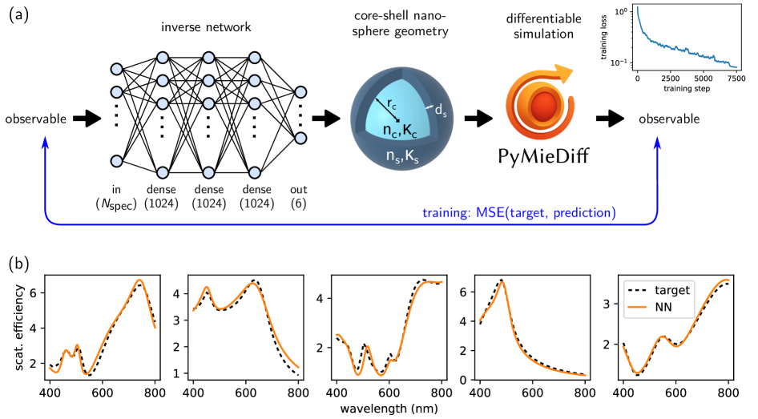
Transfer Matrix Method
Waves in Stratified Media
Superposition in layer \(i\):
Propagation Matrix
Relating the forward (\(a_i\)) and backward (\(b_i\)) waves across a single layer of thickness \(d_i\):
The matrix \(P_i\) links the boundaries \(z_{i-1}\) (left) and \(z_i\) (right):
where the phase thickness is \(\phi_i = k_{z,i} d_i\).
Interface Matrix
Relating fields at the interface between Medium \(i\) and Medium \(j\):
Where \(r_{ij}\) and \(t_{ij}\) are the Fresnel reflection and transmission coefficients.
Global Transfer Matrix
The total stack response is the product of all interface and propagation matrices:
For an incident wave of amplitude \(a_0 = 1\), with reflected amplitude \(r\), transmitted amplitude \(t\), and no backward wave from the substrate (\(b_{N+1} = 0\)):
Reflection & Transmission
The system response is extracted from the global matrix $M$:
Calculating the measurable Reflectance ($R$) and Transmittance ($T$):
TMM Inverse Design Targets
Bloch Surface Waves
Maximize local field enhancement at the final interface under Total Internal Reflection (TIR):
Spectral Shaping
Match a specific broadband reflection profile, such as a visible Notch Filter:
Differentiable RCWA with Nannos

We will use the RCWA (Rigorous coupled-wave analysis) code Nannos to perform multilayer optimizations. RCWA is more sophisticated than the Transfer Matrix Method because it allows modeling nanostructured layers. For uniform layers, it naturally reduces to TMM. Since Nannos is based on PyTorch and is fully differentiable, it is ideal for our inverse design workflows.
Thank You
Let's move to the Jupyter Notebooks for a hands-on implementation!